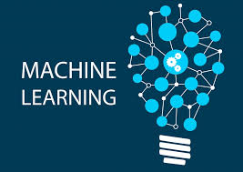

PRACTICA DE SEMINARIO

HTML5 es un lenguaje markup (de hecho, las siglas de HTMLsignifican Hyper Text Markup Language) usado para estructurar y presentar el contenido para la web. Es uno de los aspectos fundamentales para el funcionamiento de los sitios, pero no es el primero. Es de hecho la quinta revisión del estándar que fue creado en 1990. A fines del año pasado, la W3C la recomendó para transformarse en el estándar a ser usado en el desarrollo de proyectos venideros.
Por así decirlo, qué es HTML5 está relacionado también con la entrada en decadencia del viejo estándar HTML 4, que se combinaba con otros lenguajes para producir los sitios que podemos ver hoy en día. Con HTML5, tenemos otras posibilidades para explotar usando menos recursos. Con HTML5, también entra en desuso el formato XHTML, dado que ya no sería necesaria su implementación HTML5.
Se trata de un sistema para formatear el layout de nuestras páginas, así como hacer algunos ajustes a su aspecto. Con HTML5, los navegadores como Firefox, Chrome, Explorer, Safari y más pueden saber cómo mostrar una determinada página web, saber dónde están los elementos, dónde poner las imágenes, dónde ubicar el texto.
En este sentido, el HTML5 no se diferencia demasiado de su predecesor, un lenguaje del cual hablamos hace algunos meses en nuestra guia basica de HTMLLa diferencia principal, sin embargo, es el nivel de sofisticación del código que podremos construir usando HTML5.
Paginadas relacionados HTML5
Tutorial de HTML5
Ventajas de HTML5
Manual de HTML5
Curso de HTML5
Videos relacionados HTML5
Introduccion a HTML5
Curso Basico de HTML5
Como diseñar un sitio web
Como crear una pagina web
CSS3 es la última evolución del lenguaje de las Hojas de Estilo en Cascada (Cascading Style Sheets), y pretende ampliar la versión CSS2.1. Trae consigo muchas novedades altamente esperadas , como las esquinas redondeadas, sombras,gradientes, title="CSS transitions">transiciones o animaciones, y nuevos layouts como multi-columnas, cajas flexibles o maquetas de diseño en cuadrícula (grid layouts).
La especificación de CSS Level 3 o más comúnmente conocida como CSS3 no es una especificación completa sino que se divide en diferentes módulos. Cada uno de ellos añade nuevas capacidades o extiende aquellas ya existentes en especificaciones anteriores. La nueva especificación debe preservar compatibilidad hacia atrás. Según la W3C existen 53 módulos actualmente en diferentes estados.Debido a su carácter modular, hay partes de la especificación en diferentes estados dentro del proceso de estandarizado. Así el pasado día 7 de junio el módulo Color Module de CSS3 era publicado como recomendación por el consorcio W3C.
CSS3 es un lenguaje (no un lenguaje de programación) utilizado para especificar el aspecto de una página web para diferentes dispositivos. Esto entra en contraste con HTML que es un lenguaje que define la estructura de un documento para su distribución por la web. El HTML le dice al navegador como se estructura el documento mientras que el CSS le dice como debe renderizarlo.
CSS3 añade muchas capacidades nuevas a la especificación anterior. Aunque aún está en proceso de estandarizado y le queda un largo camino por recorrer, ya se ha hecho un hueco al lado de HTML5 y supone uno de los mayores adelantos en el diseño web actual.
Paginadas relacionados CSS3
Introduccion a CSS3
Ventajas y Desventajas
Manual de CSS3
Manual de CSS3
Videos relacionados CSS3
Introduccion a CSS3Curso Basico de CSS
Como hacer un Menu de Navegacion CCS3
Como hacer botones falt usando iconos con CCS

JavaScript es un lenguaje de programación interpretado, dialecto del estándar ECMAScript. Se define como orientado a objetos, basado en prototipos, imperativo, débilmente tipado y dinámico.
JavaScript es el lenguaje de programación que debes usar para añadir características interactivas a tu Sitio Web, (por ejemplo, juegos, eventos que ocurren cuando los botones son presionados o los datos son introducidos en los formularios, efectos de estilo dinámicos, animación, y mucho más). Este artículo te ayudará a comenzar con este lenguaje extraordinario y te dará una idea de qué es posible hacer con el.
JavaScript es un robusto lenguaje de programación que puede ser aplicado a un documento HTML y usado para crear interactividad dinámica en los sitios web. Fue inventado por Brendan Eich, co-fundador del proyecto Mozilla, Mozilla Foundation y la Corporación Mozilla .
Puedes hacer casi cualquier cosa con JavaScript. Puedes empezar con pequeñas cosas como carruseles, galerías de imágenes, diseños fluctuantes, y respuestas a las pulsaciones de botones. Con más experiencia, serás capaz de crear juegos, animaciones 2D y gráficos 3D, aplicaciones integradas basadas en bases de datos, ¡y mucho más!.
Paginadas relacionados HTML5
Que es JavaScript
Diferencia entre Java y JavaScript
Ventajas y Desventajas
Manual
Videos relacionados JavaScript
Introduccion a JavaScriptCurso Basico de JavaScript
Introduccion ala programacion funcional en JavaScript
Curso de JavaScript para principiantes
Las aplicaciones web progresivas (PWA) son páginas web o sitios web regulares, pero que pueden aparecer al usuario como aplicaciones tradicionales o aplicaciones móviles nativas. El tipo de aplicación intenta combinar características ofrecidas por la mayoría de los navegadores modernos con los beneficios de una experiencia movil.
Progressive web apps (o aplicaciones web progresivas), es un término que se da a una nueva generación de aplicaciones que incrementan su funcionalidad, conforme las capacidades del dispositivo en el que se ejecutan, incrementan, de ahí la palabra progresiva.
Una nueva generación de estándares web, quiera completar la brecha, algo que me gusta y entusiasma, es que los estándares y los navegadores, han progresado tanto, que ya no buscamos crear aplicaciones nativas, falsas, con tecnologías web; lo que buscamos ahora es crear aplicaciones web, que por sí mismas, cubran las brechas de experiencia que las aplicaciones nativas tenían de ventaja.
Son aplicaciones web, no aplicaciones nativas, pero usar cualquiera de ellas es (o debería ser) indiferente para el usuario.
Paginadas relacionados HTML5
Que es PWA
Introducion a PWA
Ventajas y Desventajas de PWA
Manual
Videos relacionados PWA
Introduccion a PWA
Las aplicaciones PWA son el futuro
Ventajas de PWA
Conoce el servicio worker de una PWA

La Inteligencia Artificial (IA) es la combinación de algoritmos planteados con el propósito de crear máquinas que presenten las mismas capacidades que el ser humano. Una tecnología que todavía nos resulta lejana y misteriosa, pero que desde hace unos años está presente en nuestro día a día a todas horas.
Los avances en IA ya están impulsando el uso del big data debido a su habilidad para procesar ingentes cantidades de datos y proporcionar ventajas comunicacionales, comerciales y empresariales que la han llevado a posicionarse como la tecnología esencial de las próximas décadas. Transporte, educación, sanidad, cultura... ningún sector se resistirá a sus encantos.
La inteligencia artificial (IA), también llamada inteligencia computacional, es la inteligencia exhibida por máquinas. En ciencias de la computacion, una máquina «inteligente» ideal es un agente racional flexible que percibe su entorno y lleva a cabo acciones que maximicen sus posibilidades de éxito en algún objetivo o tarea. Coloquialmente, el término inteligencia artificial se aplica cuando una máquina imita las funciones «cognitivas» que los humanos asocian con otras mentes humanas, como por ejemplo: «aprender» y «resolver problemas».
A medida que las máquinas se vuelven cada vez más capaces, tecnología que alguna vez se pensó que requería de inteligencia se elimina de la definición. Por ejemplo, el reconocimiento óptico de caracteres ya no se percibe como un ejemplo de la «inteligencia artificial» habiéndose convertido en una tecnología común. Avances tecnológicos todavía clasificados como inteligencia artificial son los sistemas de conducción autónomos o los capaces de jugar al ajedrez o al Go.
Paginas relacionados IA
Que es la IAIntroduccion a IA
Ventajas y Riesgos de IA
Guias para Aprender IA
Videos relacionados IA
Que es la IA
Introduccion a IA
Debate de IA
Drones asesinos manejados por IA

Machine Learning es una revista científica revisada por pares, publicada desde 1986. Debe distinguirse de la revista Machine intelligence que se estableció a mediados de la década de 1960.
En 2001, cuarenta editores y miembros del consejo editorial de Machine Learning renunciaron para apoyar el Journal of Machine Learning Research (JMLR), diciendo que en la era de Internet, era perjudicial para los investigadores continuar publicando sus artículos en costosos. revistas con archivos de acceso de pago.
Una máquina de vectores de soporte es un clasificador que divide su espacio de entrada en dos regiones, separadas por un límite lineal. Aquí, ha aprendido a distinguir círculos blancos y negros.
Otra categorización de las tareas de aprendizaje automático surge cuando se considera el resultado deseado de un sistema de aprendizaje automático.
Paginas Relacionados Machine Learning
Que es Machine LearningIntroduccion a Machine leaarning
Guias para Principiantes de Machine Learning
Ventjas de Machine Learning en las Empresa
Videos Relacionados Machine Learning
Que es Machine LearningIntroduccion a Machine leaarning
Elementos Principales de Machine Learning
Algoritmos Usados en Machine Learning
El aprendizaje profundo (también conocido como aprendizaje estructurado profundo o aprendizaje jerárquico) es parte de una familia más amplia de métodos de aprendizaje automático basados en representaciones de datos de aprendizaje, en oposición a los algoritmos específicos de tareas.
El aprendizaje puede ser supervisado, semi-supervisado o no supervisado. El aprendizaje profundo es un subconjunto de la IA y el aprendizaje automático que utiliza redes neuronales artificiales de varias capas para proporcionar una precisión avanzada en tareas tales como detección de objetos, reconocimiento de voz, traducción de idiomas y otros.
El aprendizaje profundo difiere de las técnicas tradicionales de aprendizaje automático en que pueden aprender automáticamente representaciones de datos tales como imágenes, video o texto, sin introducir reglas codificadas a mano o conocimiento de dominio humano.
Sus arquitecturas altamente flexibles pueden aprender directamente de datos brutos y pueden aumentar su precisión predictiva cuando se les proporcionan más datos.
Paginas Relacionados con Deep Learning
Que es Deep LearningIntroduccion Aprendizaje Profundo
Deep learning, Inteligencia casi humana al servicio de la industria
Revolucion del Aprendizaje Profundo
Videos Relacionados con Deep Learning
Introduccion a Deep LearningAprendizaje Profundo con Robotica
Aprendizaje Profundo desde Ambientes de Aprendizaje
Aprendizaje Profundo desde los nuevos Liderazgo

Una red neuronal artificial es un grupo interconectado de nodos similar a la vista red de neurons en un cerebro biológico. Cada nodo circular representa una neurona artificial y cada flecha representa una conexión desde la salida de una neurona a la entrada de otra. Las redes neuronales (también conocidas como sistemas conexionista) son un modelo computacional basado en un gran conjunto de unidades neuronales simples (neuronas artificiales), de forma aproximadamente análoga al comportamiento observado en los axones de las neuronas en los cerebros biológicos.
Cada unidad neuronal está conectada con muchas otras y los enlaces entre ellas pueden incrementar o inhibir el estado de activación de las neuronas adyacentes.
Cada unidad neuronal, de forma individual, opera empleando funciones de suma. Puede existir una función limitadora o umbral en cada conexión y en la propia unidad, de tal modo que la señal debe sobrepasar un límite antes de propagarse a otra neurona. Estos sistemas aprenden y se forman a sí mismos, en lugar de ser programados de forma explícita, y sobresalen en áreas donde la detección de soluciones o características es difícil de expresar con la programación convencional.
Las redes neuronales suelen consistir en varias capas o un diseño de cubo, y la ruta de la señal atraviesa de adelante hakim arts. Propagacion hacia atras es donde se utiliza la estimulación hacia adelante o en el "frente" para restablecer los pesos de las unidades neuronales y esto a veces se realiza en combinación con una formación en la que se conoce el resultado correcto.
Paginas Relacionados con Red Neuronal Artificial
Que es una Red NeuronalIntroduccion a la Red Neuronal
Ventajas de las Red Neuronales
4 Beneficios que surgen al Implementar las Redes Neuronales
Videos Relacionados con Red Neuronal Artificial
Que es una Red Neuronal Artificial
Introduccion a la Red Neuronal para no expertos
funciones de las Red Neuronal
Aplicaciones de las Redes Neuronales Artificiales

Una criptomoneda, criptodivisa (del inglés cryptocurrency) o criptoactivo es un medio digital de intercambio. La primera criptomoneda que empezó a operar fue el bitcoin en 2009.
En los sistemas de criptomonedas, se garantiza la seguridad, integridad y equilibrio de sus estados de cuentas (contabilidad) por medio de un entramado de agentes (transferencia de archivo segmentada o transferencia de archivo multifuente) que se verifican (desconfían) mutuamente llamados mineros, que son, en su mayoría, público en general y protegen activamente la red (el entramado) al mantener una alta tasa de procesamiento de algoritmos, con la finalidad de tener la oportunidad de recibir una pequeña propina, que se reparte de manera aleatoria.
Romper la seguridad existente en una criptomoneda es matemáticamente posible, pero el costo para lograrlo sería inasumiblemente alto. Por ejemplo, un atacante que intentase quebrar el sistema de prueba de trabajo de Bitcoin necesitaría una potencia computacional mayor que el de todo el entramado (red-enjambre) de todos los mineros del sistema, y aun así, solo tendría una probabilidad de éxito del 50% (n.º de ronda de autenticación), en otras palabras, romper la seguridad de Bitcoin exigiría una capacidad superior a la de empresas tecnológicas del tamaño de google.
Las criptomonedas hacen posible el llamado internet del valor, también conocido por las siglas IoV (del inglés internet of value), también llamado Internet del dinero: son aplicaciones de Internet que permiten el intercambio de valor en forma de criptomonedas. Este valor pueden ser contratos, propiedad intelectual, acciones o cualquier propiedad de algo con valor.
Paginas Relacionados con una Criptomonedas
Que es una CriptomonedasIntroduccion a una Criptomonedas
Las 5 Criptomonedas mas valiosa
Guias para principiantes del bitcoin y las criptomonedas
Videos Relacionados con una Criptomonedas
Que es una CriptomonedasIntroduccion a una Criptomonedas
Como Funciona una Criptomonedas
3 cosas que no dicen de una Criptomonedas
Una cadena de bloques o cadena articulada, conocida en inglés como blockchain, es una estructura de datos en la que la información contenida se agrupa en conjuntos (bloques) a los que se les añade meta informaciones relativas a otro bloque de la cadena anterior en una línea temporal, de manera que gracias a técnicas criptográficas, la información contenida en un bloque sólo puede ser repudiada o editada modificando todos los bloques posteriores.
Esta propiedad permite su aplicación en entorno distribuido de manera que la estructura de datos blockchain puede ejercer de base de datos pública no relacional que contenga un histórico irrefutable de información.En la práctica ha permitido, gracias a la criptografía asimétrica y las funciones de resumen o hash, la implementación de un registro contable (ledger) distribuido que permite soportar y garantizar la seguridad de dinero digital. Siguiendo un protocolo apropiado para todas las operaciones efectuadas sobre la blockchain, es posible alcanzar un consenso sobre la integridad de sus datos por parte de todos los participantes de la red sin necesidad de recurrir a una entidad de confianza que centralice la información.
Por ello se considera una tecnología en la que la "verdad" (estado confiable del sistema) es construida, alcanzada y fortalecida por los propios miembros; incluso en un entorno en el que exista una minoría de nodos en la red con comportamiento malicioso (nodos sybil) dado que, en teoría, para comprometer los datos, un atacante requeriría de una mayor potencia de cómputo y presencia en la red que el resultante de la suma de todos los restantes nodos combinados.
Por las razones anteriores, la tecnología blockchain es especialmente adecuada para escenarios en los que se requiera almacenar de forma creciente datos ordenados en el tiempo, sin posibilidad de modificación ni revisión y cuya confianza pretenda ser distribuída en lugar de residir en una entidad certificadora.
Paginas Relacionados con BlockChain
Que es un BlockChainIntroduccion a BlockChain
Como Funciona BlockChain
Los multiples beneficios de BlockChain
Videos Relacionados con BlockChain
Que es un BlockChainIntroduccion a BlockChain
Como Funciona BlockChain
Para que sirve BlockChain
La seguridad informática, también conocida como ciberseguridad o seguridad de tecnologías de la información, es el área relacionada con la informatica y la telematica que se enfoca en la protección de la infraestructura computacional y todo lo relacionado con esta y, especialmente, la información contenida en una computadora o circulante a través de las redes de computadoras.
Para ello existen una serie de estándares, protocolos, métodos, reglas, herramientas y leyes concebidas para minimizar los posibles riesgos a la infraestructura o a la información. La ciberseguridad comprende sotfware (bases de datos, meta datos y archivos),hardware, redes de computadoras y todo lo que la organización valore y signifique un riesgo si esta información confidencial llega a manos de otras personas, convirtiéndose, por ejemplo, en información privilegiada.
La definición de seguridad de la informacion no debe ser confundida con la de «seguridad informática», ya que esta última solo se encarga de la seguridad en el medio informático, pero la información puede encontrarse en diferentes medios o formas, y no solo en medios informáticos.
La seguridad informática es la disciplina que se encarga de diseñar las normas, procedimientos, métodos y técnicas destinados a conseguir un sistema de información seguro y confiable.
Puesto simple, la seguridad en un ambiente de red es la habilidad de identificar y eliminar vulnerabilidades. Una definición general de seguridad debe también poner atención a la necesidad de salvaguardar la ventaja organizacional, incluyendo información y equipos físicos, tales como los mismos computadores. Nadie a cargo de seguridad debe determinar quién y cuándo puede tomar acciones apropiadas sobre un ítem en específico. Cuando se trata de la seguridad de una compañía, lo que es apropiado varía de organización en organización. Independientemente, cualquier compañía con una red debe tener una política de seguridad que se dirija a la conveniencia y la coordinación.
Paginas Relacionados con CyberSeguridad
Que es la Seguridad InformaticaIntroduccion a la Seguridad Informatica
Diferencia entre Ciberseguridad y Seguridad Informatica
Guias para los paises en Desarrollo
Videos Relacionados con CyberSeguridad
Que es la Seguridad InformaticaIntroduccion a la Seguridad Informatica
Como Empezar en Seguridad Informatica
Como ser un hacker o un esperto en Seguridad Informatica

La realidad virtual (RV) es un entorno de escenas u objetos de apariencia real. La acepción más común refiere a un entorno generado mediante tecnología informatica, que crea en el usuario la sensación de estar inmerso en él. Dicho entorno es contemplado por el usuario a través de un dispositivo conocido como gafas o casco de la realidad virtual Este puede ir acompañado de otros dispositivos, como guantes o trajes especiales, que permiten una mayor interacción con el entorno así como la percepción de diferentes estímulos que intensifican la sensación de realidad.
La realidad virtual se podría definir como un sistema informático que genera en tiempo real representaciones de la realidad, que de hecho no son más que ilusiones ya que se trata de una realidad perceptiva sin ningún soporte físico y que únicamente se da en el interior de los ordenadores.
La simulación que hace la realidad virtual se puede referir a escenas virtuales, creando un mundo virtual que sólo existe en el ordenador de lugares u objetos que existen en la realidad. También permite capturar la voluntad implícita del usuario en sus movimientos naturales proyectándolos en el mundo virtual que estamos generando, proyectando en el mundo virtual movimientos reales.
Además, también nos permite hundirnos completamente en un mundo virtual, desconectando los sentidos completamente de la realidad teniendo la sensación la persona que está dentro de que la realidad corresponde en el mundo virtual.
Paginas Relacionada con Realidad Virtual
Que es la Realidad VirtualVentajas y Desventajas de la Realidad Virtual
Beneficios de la Realidad Virtual
Manual de la Realidad Virtual
Videos Relacionado con Realidad Virtual
Que es la Realidad VirtualIntroduccion a la Realidad Virtual
Como funciona la Realidad Virtual
Caracteristica, tipo, dispositivos, aplicaciones, ventajas y desventajas

La realidad aumentada (RA) es el término que se usa para definir la visión de un entorno físico del mundo real, a través de un dispositivo tecnológico. Este dispositivo o conjunto de dispositivos, añaden información virtual a la información física ya existente; es decir, una parte sintética virtual a la real. De esta manera; los elementos físicos tangibles se combinan con elementos virtuales, creando así una realidad aumentada en tiempo real.
La realidad aumentada es diferente de la realidad virtual : sobre la realidad material del mundo físico monta una realidad visual generada por la tecnología, en la que el usuario percibe una mezcla de las dos realidades; en cambio, en la realidad virtual el usuario se aísla de la realidad material del mundo físico para sumergirse en un escenario o entorno totalmente virtual.
Con la ayuda de la tecnología; por ejemplo, añadiendo la visión por un computador y reconocimiento de objetos, la información sobre el mundo real alrededor del usuario, se convierte en interactiva y digital. La información artificial sobre el medio ambiente y los objetos puede ser almacenada y recuperada como una capa de información en la parte superior de la visión del mundo real.
La realidad aumentada de investigación explora la aplicación de imágenes generadas por ordenador en tiempo real a secuencias de vídeo como una forma de ampliar el mundo real. La investigación incluye a este respecto el uso de pantallas colocadas en la cabeza, un monitor virtual colocado en la retina para mejorar la visualización y la construcción de ambientes controlados a partir de sensores y actuadores.
Paginas Relacionados con Realidad Aumentada
Que es la Realidad AumentadaIntroduccion ala Realidad Aumentada
Beneficios de la Realidad Aumentada
la Realidad Aumentada
Videos Relacionados con Realidad Aumentada
Que es la Realidad AumentadaIntroduccion ala Realidad Aumentada
Realidad Aumentada en Educacion
Los mejores uso para la Realidad Aumentada

La realidad mixta (RM), también llamada a veces realidad híbrida, es la combinación de realidad virtual y realidad aumentada. Esta combinación permite crear nuevos espacios en los que interactúan tanto objetos y/o personas reales como virtuales. Es decir, se puede considerar como una mezcla entre la realidad, realidad aumentda , virtualidad aumentada y realidad virtual.
El término realidad mixta no debe confundirse con el de realidad aumentada o RA. La realidad aumentada genera los estímulos a tiempo real para la interacción del usuario, los cuales se superponen sobre el entorno físico de este, mientras que la realidad mixta no sólo permite la interacción del usuario con el entorno virtual sino que también permite que objetos físicos del entorno inmediato del usuario sirvan como elementos de interacción con el entorno virtual.
En la realidad mixta se trata de llevar el mundo real al mundo virtual. La idea es generar un modelo 3D de la realidad y sobre él superponer información virtual. De esta forma, se podrán combinar ambas realidades para agregar contenido adicional de valor para el usuario de MR.
Conseguir esta traslación del mundo real a un modelo 3D virtual es uno de los principales retos de esta tecnología. Uno de los métodos para logra la fusión de ambos mundos y formar un espacio común es la que se utiliza en Project Tango de Google. Este método consiste en el escaneo del espacio en tiempo real para poder conseguir el mix del modelo 3D real con el virtual.
Paginas Relacionados con Realidad Mixta
Que es la Realidad MixtaIntroduccion a la Realidad Mixta
Importancia de la Realidad Mixta en la Empresa
Ventajas en las Empresa
Videos Relacionados con Realidad Mixta
Realidad Mixta y su AplicacionQue es la Realidad Mixta
Probando la Realidad Mixta
Desarrollo de Aplicaciones
Internet de las cosas (IoT) es la red de dispositivos físicos, vehículos, electrodomésticos y otros elementos integrados con componentes electrónicos, software, sensores, actuadores y conectividad que permite que estas cosas se conecten e intercambien datos, creando oportunidades para una integración más directa del mundo físico en los sistemas basados en computadora, lo que resulta en mejoras de eficiencia, beneficios económicos y reducción de los esfuerzos humanos.
El número de dispositivos IoT aumentó 31% año tras año a 8.4 billones en 2017 y se estima que habrá 30 billones de dispositivos para 2020. Se prevé que el valor de mercado global de IoT llegue a $ 7,1 billones en 2020.
IoT implica extender la conectividad de Internet más allá de los dispositivos estándar, como computadoras de escritorio, computadoras portátiles, teléfonos inteligentes y tabletas, a cualquier rango de dispositivos físicos y objetos cotidianos tradicionalmente tontos o sin acceso a Internet.
Integrados con la tecnología, estos dispositivos se pueden comunicar e interactuar a través de Internet, y se pueden monitorear y controlar remotamente.
Paginas Relacionados con IOT
Que es el IOTVentajas del IOT
Construyendo un proyecto del IOT
Guias del IOT
Videos Relacionados con IOT
Introduccion el IOTEn que consiste el IOT
Fundamentos de IOT
Lo que necesita saber de IOT
Mecatrónica es una disciplina que sirve para diseñar y desarrollar productos que involucren sistemas de control para el diseño de productos o procesos inteligentes, lo cual busca crear maquinarias más compleja para facilitar las actividades del ser humano a través de procesos electrónicos en la industria mecánica, principalmente.
Esta disciplina une la ingenieria mecanica, ingenieria electronica , ingenieria informatica, ingenieria de control. Debido a que combina varias ingenierías en una sola, su punto fuerte es la versatilidad.
La Mecatrónica no es más que la fusión o combinación de varias ingenierías, es decir, la Mecatrónica pretende ser la ingeniera de precisión por excelencia combinando 4 disciplinas que son:
- Ingeniería Electrónica
- Ingeniería Mecánica
- Ingeniería Informática
- Ingeniería de Control
Entendiendo que la Mecatrónica abarca disciplinas muy amplias y complejas podemos decir que tiene muchos campos de aplicación. De hecho, la Mecatrónica pretende ser esa disciplina o Ingeniería en la que los productos se fabriquen teniendo en cuenta todas las ingenierías y no estando separadas como tradicionalmente.
Paginas Relacionados con Mecatronica
Que es MecatronicaIntroduccion a la Mecatronica
Diagnostico de Prospectiva de Mecatronica
Manual y Libros de Mecatronica
Videos Relacionados con Mecatronica
Que es MecatronicaIntroduccion a la Mecatronica
Curso de Mecatronica
Mision de Mecatronica
La impresión 3D es cualquiera de varios procesos en los que el material se une o se solidifica bajo el control de la computadora para crear un objeto tridimensional, con el material que se agrega.
La impresión 3D es cualquiera de varios procesos en los que el material se une o solidifica bajo el control de la computadora para crear un objeto tridimensional, con material que se agrega (como moléculas líquidas o granos de polvo fusionados).
La impresión 3D se utiliza tanto en prototipos rápidos como en fabricación aditiva (AM). Los objetos pueden ser de casi cualquier forma o geometría y generalmente se producen utilizando datos de modelos digitales de un modelo 3D u otra fuente de datos electrónicos, como un archivo de Archivo de Fabricación Aditiva (AMF) (generalmente en capas secuenciales).
Existen muchas tecnologías diferentes, como la estereolitografía (SLA) o el modelado de depósitos fusionados (FDM). Por lo tanto, a diferencia del material eliminado de un stock en el proceso de mecanizado convencional, la impresión 3D o AM crea un objeto tridimensional a partir de un modelo de diseño asistido por computadora (CAD) o archivo AMF, generalmente añadiendo material capa por capa sucesivamente.
Paginas Relacionados con 3D Printing
Que es la Impresion 3DIntroduccion
Ventajas y Desventajas
Manual de 3D Printing
Videos Relacionados con 3D Printing
Que es la Impresion 3DIntroduccion
Funcionamiento y Usos
Ventajas y Desventajas

En telecomunicaciones, 5G son las siglas utilizadas para referirse a la quinta generación de tecnologías de telefonia movil. Es la sucesora de la tecnología 4G. Actualmente se encuentra sin estandarizar y las empresas de telecomunicación están desarrollando sus prototipos. Está previsto que su uso común sea en 2020.
El programa surcoreano “5Gmobile communication systems based on beam-divisionmultiple access and relays with group cooperation” se formó en 2008. En Europa, Neelie Kroes, la Comisaría Europea, recibió en 2013 50 millones de euros para las investigaciones con el objetivo de entregar la tecnología móvil 5G en 2020. En particular, el Proyecto METIS 2020 fue impulsado por un fabricante de automóviles y varias empresas de telecomunicaciones, y prevé llegar a un consenso mundial sobre el futuro sistema de comunicaciones móviles.
A raíz de esto, en 2013, otro proyecto se inició, llamado 5Green, ligado al proyecto METIS y con objetivo de desarrollar redes verdes 5G Móviles. Aquí, el objetivo es desarrollar directrices para la definición de la red de nueva generación con atención especial a aspectos de eficiencia energética, sostenibilidad y accesibilidad.
El miércoles 20 de diciembre de 2017, el 3rd Generation Partnership Program (3GPP) aprobó, en Lisboa (Portugal), las especificaciones de Nueva Radio 5G No Autónoma (NSA 5G NR, o Non-Standalone 5G New Radio). Se trata del primer estándar de Quinta Generación (5G) de redes móviles aprobado oficialmente por el 3GPP .La compañía estadounidense Qualconm, ha colocado en su sitio web que la Telefonía móvil 5G, sale en el año 2019.
Paginas Relacionados con 5G
Que son las Redes 5GIntroduccion la Red 5G
Como la Red 5G cambiaran nuestra forma de ver el mundo
Ventajas de las Redes 5G
Videos Relacionados con 5G
Que son las Redes 5GPorque es necesaria la Red 5G
Cosas que se prodian hacer con la Red 5G
La tecnologia que cambiara tu vida
Resumen de lo Aprendido
HTML5
HTML5 es un lenguaje markup (de hecho, las siglas de HTMLsignifican Hyper Text Markup Language) usado para estructurar y presentar el contenido para la web. Es uno de los aspectos fundamentales para el funcionamiento de los sitios, pero no es el primero. Es de hecho la quinta revisión del estándar que fue creado en 1990. A fines del año pasado, la W3C la recomendó para transformarse en el estándar a ser usado en el desarrollo de proyectos venideros.
CSS3
CSS3 es la última evolución del lenguaje de las Hojas de Estilo en Cascada (Cascading Style Sheets), y pretende ampliar la versión CSS2.1. Trae consigo muchas novedades altamente esperadas , como las esquinas redondeadas, sombras,gradientes, transiciones o animaciones y nuevos layouts como multi-columnas, cajas flexibles o maquetas de diseño en cuadrícula (grid layouts).
JAVASCRIPT
JavaScript es el lenguaje de programación que debes usar para añadir características interactivas a tu Sitio Web, (por ejemplo, juegos, eventos que ocurren cuando los botones son presionados o los datos son introducidos en los formularios, efectos de estilo dinámicos, animación, y mucho más). Este artículo te ayudará a comenzar con este lenguaje extraordinario y te dará una idea de qué es posible hacer con el.
PWA
Las aplicaciones web progresivas (PWA) son aplicaciones web que son páginas web o sitios web regulares, pero que pueden aparecer al usuario como aplicaciones tradicionales o aplicaciones móviles nativas. El tipo de aplicación intenta combinar características ofrecidas por la mayoría de los navegadores modernos con los beneficios de una experienciamovil.
INTELIGENCIA ARTIFICIAL
La Inteligencia Artificial (IA) es la combinación de algoritmos planteados con el propósito de crear máquinas que presenten las mismas capacidades que el ser humano. Una tecnología que todavía nos resulta lejana y misteriosa, pero que desde hace unos años está presente en nuestro día a día a todas horas.
RED NEURONAL
Una red neuronal artificial es un grupo interconectado de nodos similar a la vista red de neurona en un cerebro biológico. Cada nodo circular representa una neurona artificial y cada flecha representa una conexión desde la salida de una neurona a la entrada de otra.
UNA CRIPTOMONEDAS
Una criptomoneda, criptodivisa (del inglés cryptocurrency) o criptoactivo es un medio digital de intercambio. La primera criptomoneda que empezó a operar fue el bitcoin en 2009.
CADENA DE BLOQUES
Una cadena de bloques o cadena articulada, conocida en inglés como blockchain, es una estructura de datos en la que la información contenida se agrupa en conjuntos (bloques) a los que se les añade meta informaciones relativas a otro bloque de la cadena anterior en una línea temporal, de manera que gracias a técnicas criptográficas, la información contenida en un bloque sólo puede ser repudiada o editada modificando todos los bloques posteriores.
La seguridad informática
Ciberseguridad o seguridad de tecnologías de la información, es el área relacionada con la informatica y la telemica que se enfoca en la protección de la infraestructura computacional y todo lo relacionado con esta y, especialmente, la información contenida en una computadora o circulante a través de las redes de computadoras.
LA REALIDAD VIRTUAL
La realidad virtual (RV) es un entorno de escenas u objetos de apariencia real. La acepción más común refiere a un entorno generado mediante tecnología informatica, que crea en el usuario la sensación de estar inmerso en él. Dicho entorno es contemplado por el usuario a través de un dispositivo conocido como gafas o casco virtual, Este puede ir acompañado de otros dispositivos, como guantes o trajes especiales, que permiten una mayor interacción con el entorno así como la percepción de diferentes estímulos que intensifican la sensación de realidad.
REALIDAD AUMENTADA
La realidad aumentada (RA) es el término que se usa para definir la visión de un entorno físico del mundo real, a través de un dispositivo tecnológico. Este dispositivo o conjunto de dispositivos, añaden información virtual a la información física ya existente; es decir, una parte sintética virtual a la real. De esta manera; los elementos físicos tangibles se combinan con elementos virtuales, creando así una realidad aumentada en tiempo real.
REALIDAD MIXTA
El término realidad mixta no debe confundirse con el de realidad aumentada o RA. La realidad aumentada genera los estímulos a tiempo real para la interacción del usuario, los cuales se superponen sobre el entorno físico de este, mientras que la realidad mixta no sólo permite la interacción del usuario con el entorno virtual sino que también permite que objetos físicos del entorno inmediato del usuario sirvan como elementos de interacción con el entorno virtual.
IOT
Internet de las cosas (IoT) es la red de dispositivos físicos, vehículos, electrodomésticos y otros elementos integrados con componentes electrónicos, software, sensores, actuadores y conectividad que permite que estas cosas se conecten e intercambien datos, creando oportunidades para una integración más directa del mundo físico en los sistemas basados en computadora, lo que resulta en mejoras de eficiencia, beneficios económicos y reducción de los esfuerzos humanos.
MECATRONICA
Mecatrónica es una disciplina que sirve para diseñar y desarrollar productos que involucren sistemas de control para el diseño de productos o procesos inteligentes, lo cual busca crear maquinaria más compleja para facilitar las actividades del ser humano a través de procesos electrónicos en la industria mecánica, principalmente.
LA IMPRESIÓN 3D
La impresión 3D se utiliza tanto en prototipos rápidos como en fabricación aditiva (AM). Los objetos pueden ser de casi cualquier forma o geometría y generalmente se producen utilizando datos de modelos digitales de un modelo 3D u otra fuente de datos electrónicos, como un archivo de Archivo de Fabricación Aditiva (AMF) (generalmente en capas secuenciales).
5G
En telecomunicaciones, 5G son las siglas utilizadas para referirse a la quinta generación de tecnologías de telefonia movil. Es la sucesora de la tecnología 4G. Actualmente se encuentra sin estandarizar y las empresas de telecomunicación están desarrollando sus prototipos. Está previsto que su uso común sea en 2020.
LUISANNA ALCANTARA FRIAS
12-SISN-1-160
Seminario de Tecnologia

@luisanna alcantara-2018